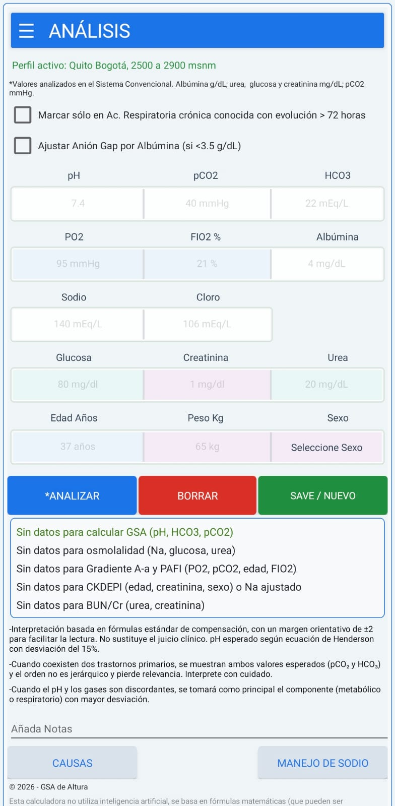
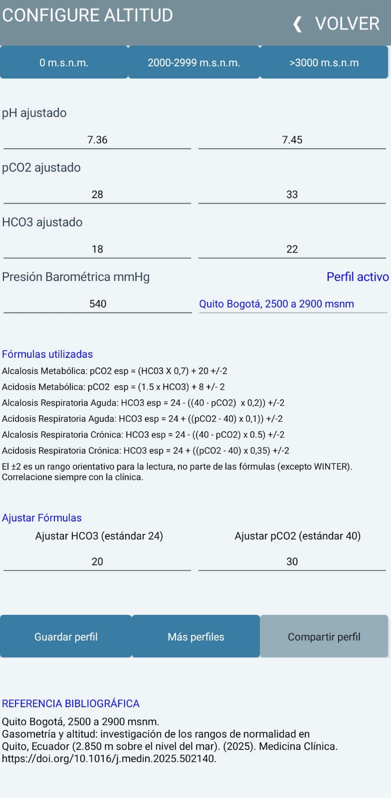
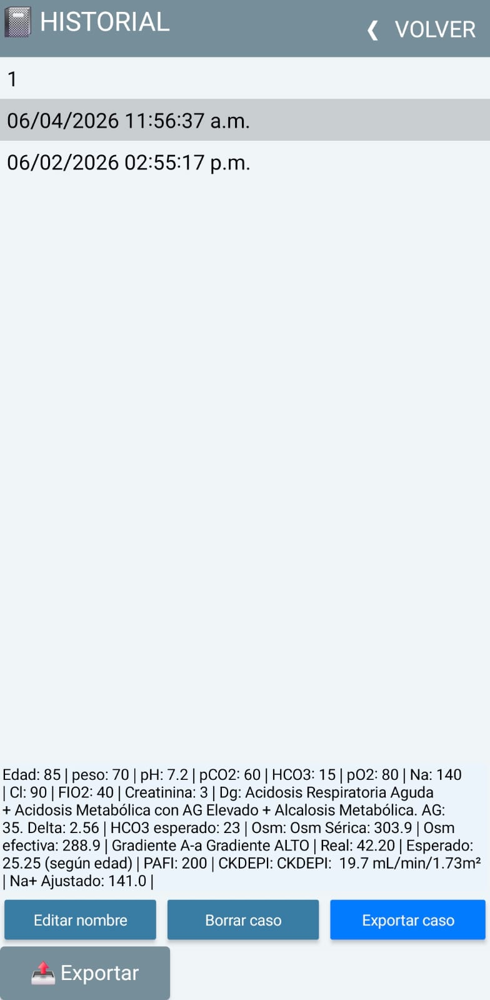

Interpretación de gasometría arterial al lado de la cama del paciente. Diseñada para el contexto clínico de altura y para hospitales con conectividad limitada.
Interpretación del estado ácido-base, oxigenación y trastornos mixtos a partir de los valores que ingresas.
Tiene guardado diferentes perfiles de Altitud totalemnte modificables.
Puedes poner ajustes gasométricos personalizados según tu propia evidencia científica.
Modo offline pensado para guardias, áreas rurales y zonas del hospital sin señal.



Escríbeme por WhatsApp, Telegram o correo (botones más abajo). Cuéntame que quieres la licencia del Analizador GSA.
Pago único, sin suscripciones. Te confirmo los medios de pago disponibles y los datos al momento.
Creo tu cuenta personal y te envío tu usuario y correo de acceso junto al enlace para descargar la app.
Descargas el archivo e instalas. En Android puede que tengas que permitir la instalación desde “orígenes desconocidos” la primera vez.
Entras con tus credenciales una sola vez. A partir de ahí funciona, incluso sin conexión a internet.
Sin mensualidades. Pagas una vez y la licencia queda asociada a tu cuenta.